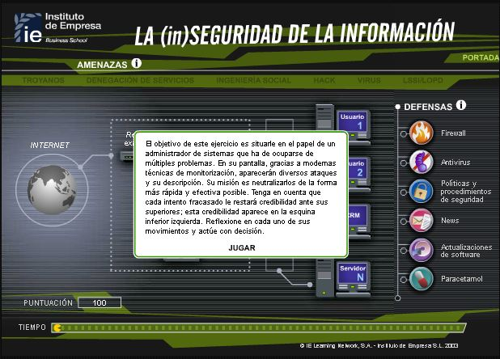
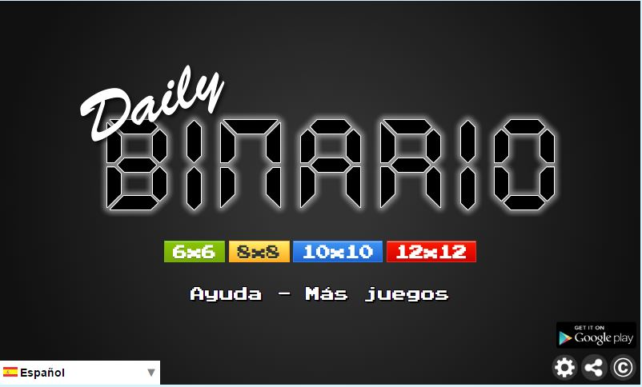
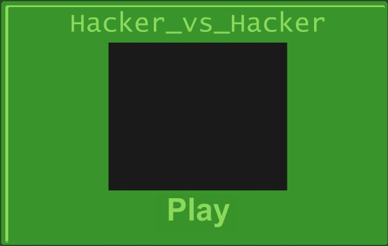

Juego de seguridad informatica

El objetivo de este ejercicio es situarse en el papel de un administrador de sistemas
que ha de ocuparse de múltiples problemas.
En su Pantalla, gracias a modernas técnicas de monitorización, aparecerán diversos
ataques y su descripción. Su misión es neutralizarlos de la forma más rapida
y efectiva posible. Tenga en cuenta que cada intento fracasado le restará credibilidad
ante sus superiores; está credibilidad aparece en la esquina inferior izquierda. Reflexione
en cada uno de sus movimientos y actúe con decisión.
Juego de redes
ESTE CONSISTE EN IR RESOLVIENDO PROBLEMAS EN UNAS OFICINAS, NECESITAS IR LEYENDO LAS REGLAS PARA COMPLETAR EL PROCESO.

ESTE CONSISTE EN AYUDAR AL ROBOT A SOLUCIONAR LOS PROBLEMASQUE SE PRESENTAN EL LA RED DE LA NAVE ESPACIAL.

Un puzle con solo 0 y 1. Resuélvelo con lógica. Cada día nuevos puzles en 4 tamaños. Usa las siguientes reglas para resolver los puzles binarios:
No se pueden colocar más de dos números iguales inmediatamente uno al lado o debajo de otro.
Todals las columnas y filas deben contener tantos ceros como unos.
La combinación de ceros y unos de cada fila es única. La misma regla se aplica a las columnas.

Usted necesitará un amplio arsenal de malwares para aplastar las defensas de los mejores hackers del mundo.
Tenga cuidado de no dejar el ordenador vulnerable ...